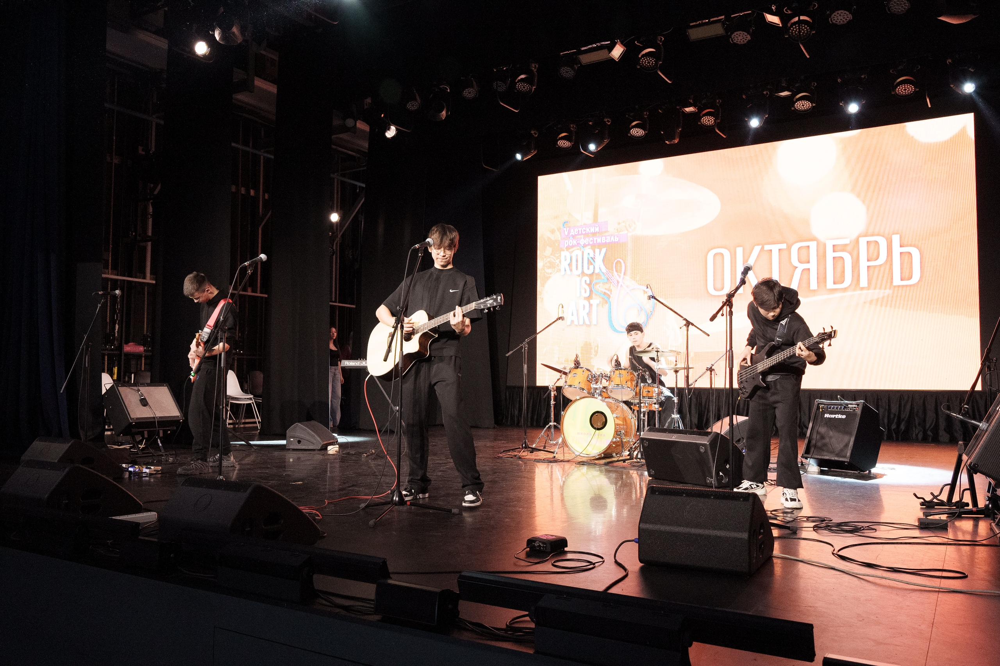
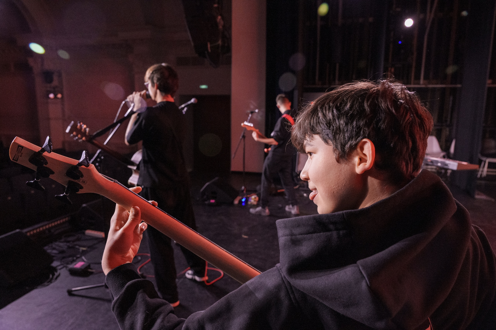
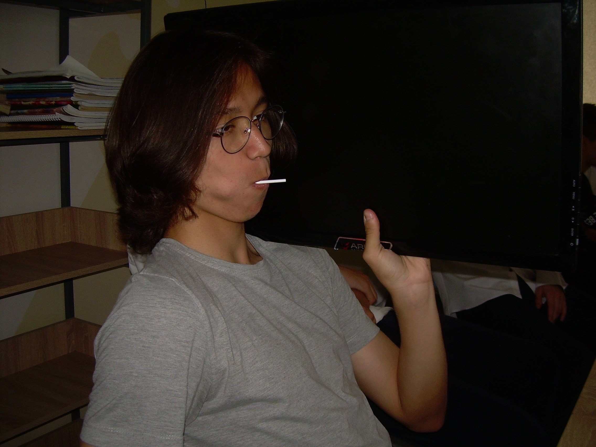

Эмиль.bmp
Э
Потерянный Крик Любви — это группа, которая превращает личное в громкое. Мы пишем песни о близости, потерях и том, что остаётся после. Живые выступления, честные тексты и звук, который не прячется.
Загрузка любви...





Магазин скоро откроется.
Попробуйте позже.